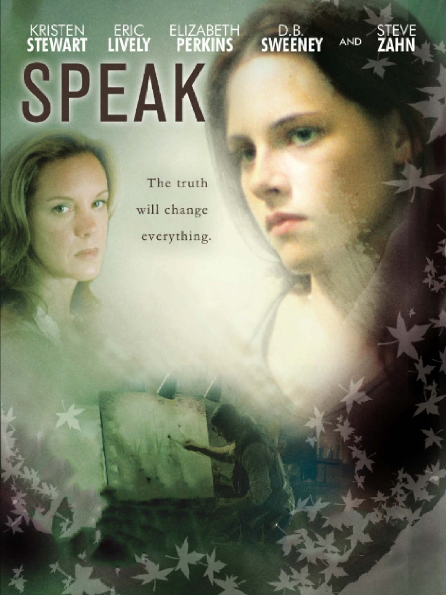

Dir. Jessica Sharzer

As far as I know, this was Kristen Stewart's first major role, and I have to say I have never seen a better representation of what it's like to be a 14 year old girl. In the movie, based on the book of the same name, Melinda (Stewart) is traumatized at a party the summer before freshman year by a senior boy. She does not speak out about it until much later in the following school year, and spends much of her time in a deep depression, fixating on drawing/painting/sculpting trees. She often feels as though nobody is truly listening to her, and decides to see how long she can go without speaking (I used to do this often). I heavily related to this movie. When I was 14, my fixation was on putting pillars in large bodies of water with a single tree on it, with no leaves. It meant a lot to me. I felt like a little tree on a strange little island in the middle of the ocean.